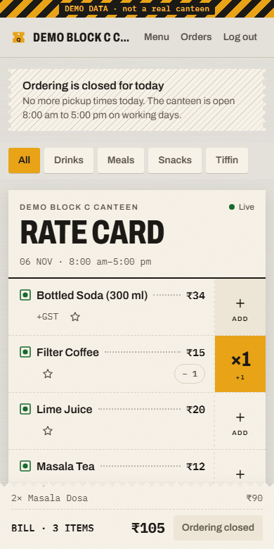
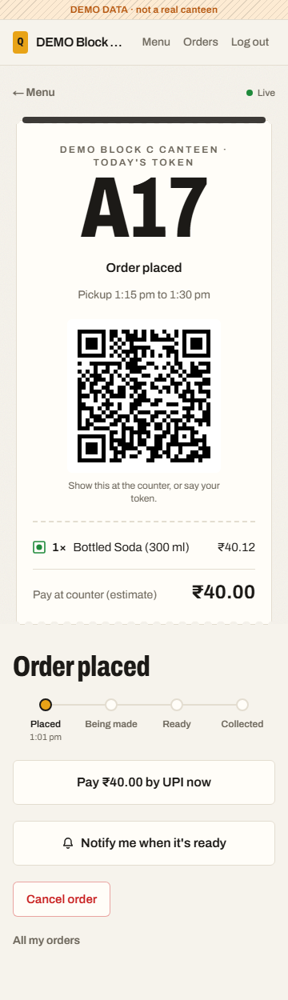
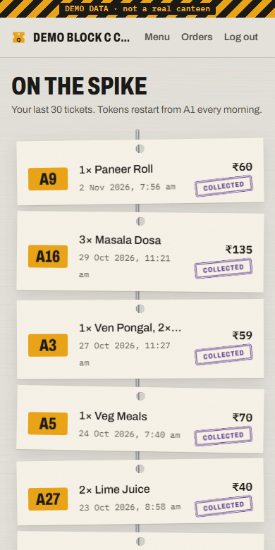
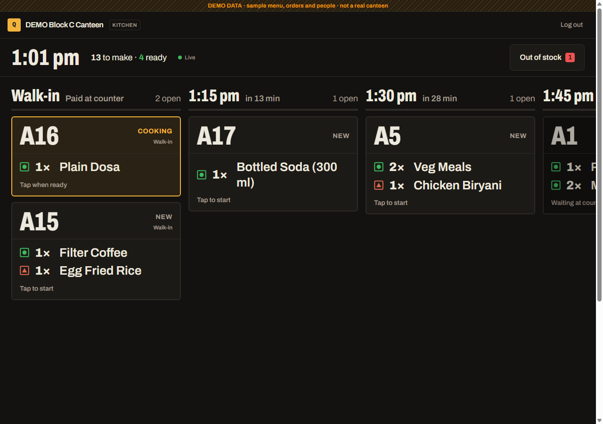
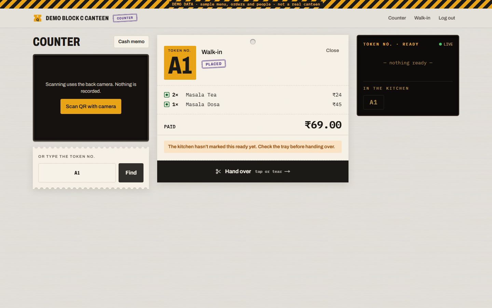
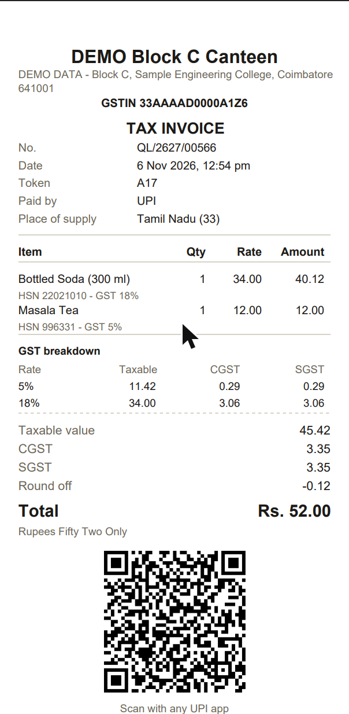
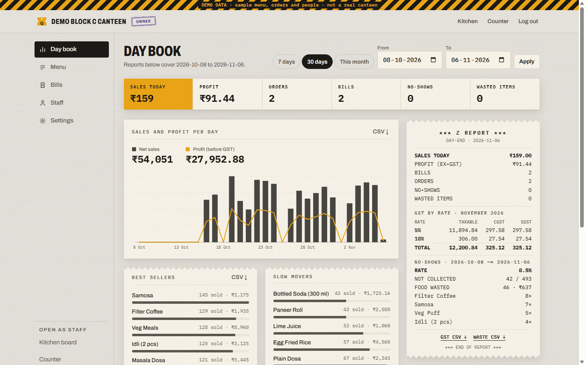

Example token
A23PICKUP 12:45 pm – 1:00 pm
- 1× Veg thali ₹60
- 1× Egg puff ₹25
PAY AT COUNTER · ₹85
Ready
PROJECT SHOWCASE · screenshots of the DEMO canteen · not the live app
Pre-ordering for college canteens
QueueLess lets students pre-order canteen food and pick it up with a token, while the canteen gets gap-free GST invoices, stock control and daily numbers. Built with Next.js and PostgreSQL.
Example token
A23PICKUP 12:45 pm – 1:00 pm
Who it's for
Students
Students lose 20+ minutes of a short lunch break standing in the canteen queue, and often reach the counter to find the dish they wanted has sold out.
Canteen owners and staff
Most college canteens are small contractors who bill on paper. They can't tell which items will run out, they cook food nobody collects, and they only learn their daily profit or GST totals when someone adds up the slips at month end.
How it works
Follow a single order from a student's phone, through the kitchen and the counter, into the owner's day book.
01Student
The student picks from today's menu, chooses a 15-minute pickup slot and gets a short token like A23 with a signed QR code.
goes to the kitchen



Swipe for more screens
02Kitchen
Orders reach the kitchen grouped by pickup slot, oldest first, in type big enough to read from across the room.
Pay first appears on orders from students with repeated no-shows. The kitchen can't start these until they're paid.
goes to the counter

03Counter
The counter scans the QR with the phone camera or types the token, takes cash or UPI, and hands the food over. That moment issues the invoice.
goes into the day book


04Owner
The owner sees the day's numbers without adding up slips: sales, profit, GST by rate, and what was cooked but never collected.

Under the hood
A canteen app is mostly simple screens. These are the places where a shortcut would cost the canteen money or break GST invoicing rules.
*** BUILD REPORT ***
QUEUELESS · 5 ITEMS
Placing an order reserves every item and the pickup slot inside a single Postgres transaction, using a conditional UPDATE … WHERE reserved + q <= capacity. When 50 students race for the last 10 samosas, the 11th sees zero rows updated and the whole order rolls back. A CHECK constraint backs it up, and items are locked in id order so two orders can't deadlock.
Postgres sequences never roll back, so a failed bill would leave a hole. Invoices take their number from a counter row per canteen, series and financial year, incremented in the same transaction that writes the invoice. Numbers are issued only at payment or hand-over, so cancelled and no-show orders never use one.
No floats anywhere. GST is computed per line as CGST plus SGST, or IGST for an inter-state buyer. For GST-inclusive prices the taxable value is back-calculated so the bill equals the menu price exactly and CGST always equals SGST. A test sweeps thousands of price and rate combinations for paisa drift.
Each order gets a short daily token and a QR code signed with a server secret, which the counter scans with the phone camera. The server checks the signature before it shows the order, so a code can't be made up by editing the token.
Every read works out whether an order is overdue, so the screens stay right even if the cron never ran. A daily cron makes no-shows permanent and gives back stock the kitchen never started. Students over the no-show limit must pay first, and the server blocks the kitchen from starting their order until they do.
*** END OF REPORT ***
Roles are enforced in every server action and API route, not just hidden in the UI. Live screens poll small JSON endpoints every 4 seconds instead of holding WebSockets, because serverless functions can't keep them open.
The README covers the architecture diagram, design decisions and an honest list of what breaks at scale.
Run it locally
You need Node 20+ and a Postgres database. A free Neon project works.
Terminal
$ npm install $ cp .env.example .env # then fill in the values $ npm run db:deploy # apply migrations $ npm run db:seed # optional: the DEMO canteen $ npm run dev # http://localhost:3000
DATABASE_URL, QR_SECRET, CRON_SECRET and DEMO_PASSWORD. Every variable is explained in .env.example./setup, where you create the canteen and the owner account.npm run vapid generates the keys.